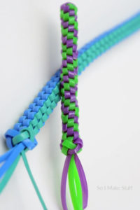

Although I have been playing on and off since the launch of the game in 2016, only recently have I started playing the game daily. Since I walk around so much in college, and the campus itself has plenty of small statues or landmarks, Pokemon Go was a great time to not only pass time in walking between classes, but to play with friends I made as well. Additionally, I sometimes like to stroll in the park near my apartment to play while also getting some well needed Vitamin D. Pokemon Go
My brag about box stitching is that most people cannot start the stitch but I can, and have been able to since elementary school. I learned how to first do the craft in a summer camp and have remembered since. In fact, there is some plastic lanyard string at my apartment that I can use to weave a new stitch whenever I want to pass time or just make something. The repetitive motions are not only calming, but create an end product that can also be a gift to others. Box Stitch Starter Guide
Like most other people in the world, I love to eat and try new dishes. I have my favorite cuisines like Chinese, Mexican, and Italian, but there are also so many cuisines that I still have not tried much if any dishes at all. I am quite curious about Slavic food like their pierogies and borscht, and their stuffed cabbages look delicious as well. Additionally, I do not want to just eat from restaurants, but hopefully learn how to cook a couple meals for myself too. Currently, my goal is to work on bettering my skills at folding dumplings and baos, but I wish to expand my culinary skillset further than boiling water and noodles.